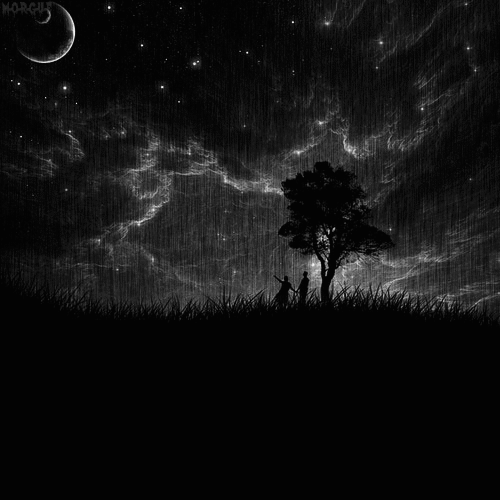

Home
About
Projects
Contact
Kontakte

Your browser does not support the audio element.
"Art of Silence - by Uniq"
Sie können mich auf den folgenden Websites finden:
Odysee: lbry://@MondWasser#7
Gab: @HaliArliem
Minds: @haliarliem
Chess.com: mondwasser
Pixelfed - soon
Email: haliarniem@proton.me
Alamy: Hali Arniem
GitHub: HaliArliem
HackerNews - stuff
Pleroma-soon
online-go.com: haliarniem
Soundcloud: Hali Arliem
PlayerFM: https://player.fm/haliarliem/play-later alternative.com